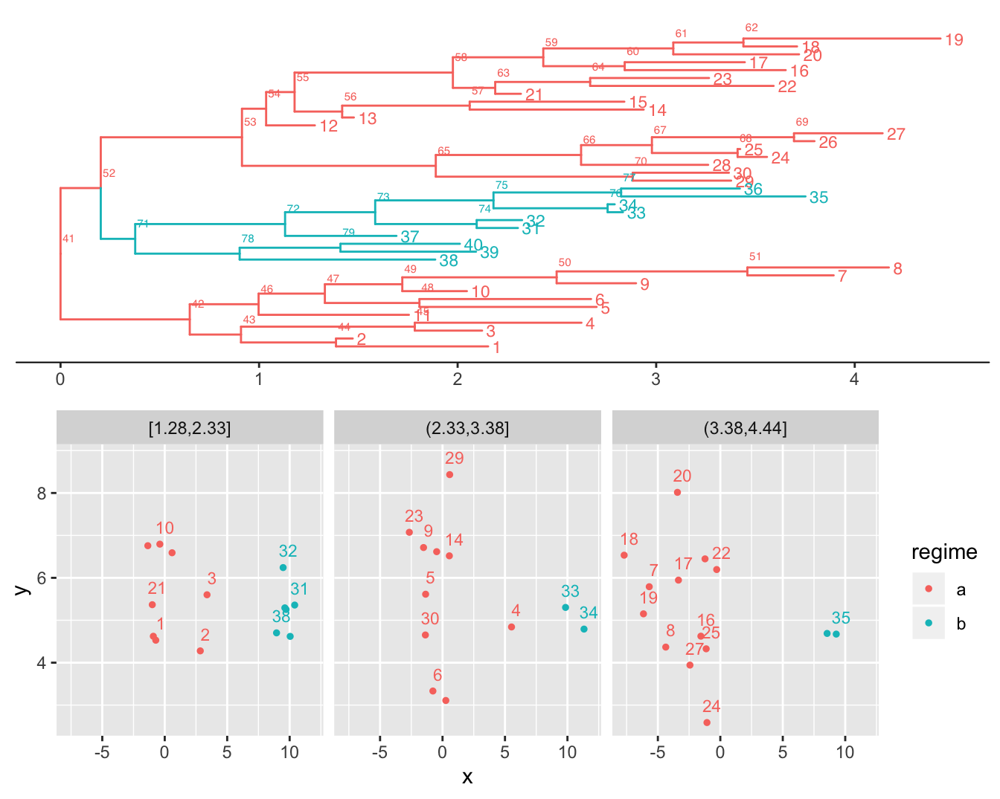

# We use the PCMBase package to do basic manipulation with trees and models.
# See https://venelin.github.io/PCMBase for an introduction into this package.
library(PCMBase)
library(PCMBayes)
library(ggtree)
# The PCMBase package comes with a collection of simulated objects, which we
# can use as example.
tree <- PCMBaseTestObjects$tree.ab
model <- PCMExtractDimensions(PCMBaseTestObjects$model_MixedGaussian_ab, dims = 1:2)
X <- PCMBaseTestObjects$traits.ab.123[1:2, ]
# Plot the tree and the data
plTree <- PCMTreePlot(tree) +
geom_tiplab(size = 3) + geom_nodelab(nudge_x = .02, nudge_y = 2, size = 2) +
theme_tree2()
plData <- PCMPlotTraitData2D(
X[, seq_len(PCMTreeNumTips(tree))],
labeledTips = seq_len(PCMTreeNumTips(tree)),
sizeLabels = 3,
sizePoints = 1,
nudgeLabels = c(0.4, 0.4),
tree, numTimeFacets = 3, scaleSizeWithTime = FALSE)
cowplot::plot_grid(plTree, plData, nrow = 2)
mgpmTemplate <- MixedGaussian(
k = 2,
modelTypes = MGPMDefaultModelTypes(),
mapping = structure(1:6, names = LETTERS[1:6]),
Sigmae_x = Args_MixedGaussian_MGPMDefaultModelTypes()$Sigmae_x)
# Set a Gaussian prior for the initial state X0
AddPrior(mgpmTemplate, member = "X0", enclos = "?",
prior = ParameterPrior(d = "dnorm", r = "rnorm",
p = list(mean = c(4, 2), sd = c(2, 2))))
# Set a uniform prior for the elements of H and Sigma_x such that all elements
# are in the interval [-4, 4]. Later we overwrite this prior for the diagonal
# elements of H and Sigma_x.
AddPrior(
mgpmTemplate, member = "H|Sigma_x", enclos = "?",
prior = ParameterPrior(d = "dunif", r = "runif", p = list(min = -4, max = 4)))
# Set exponential priors for the (non-negative) diagonal elements of the OU
# selection strength matrix H and the BM/OU matrix parameter Sigma_x. Note that,
# we are using class _Schur for the H matrix. That's why the diagonal elements
# of the untransformed matrix H are equal to the eigenvalues of the actual
# selection strength matrix obtained after transformation. For the matrix
# Sigma_x the diagonal elements denote the standard deviation of the unit-time
# drift of the traits.
# Note that this prior setting overwrites the uniform prior for the diagonal
# elements we have set previously -- the order of the AddPrior commands is
# important.
AddPrior(mgpmTemplate, member = "H|Sigma_x", enclos = "diag(?[,,1])",
prior = ParameterPrior(d = "dexp", r = "rexp", p = list(rate = 10)))
# Set a Gaussian prior for the OU-parameter Theta:
AddPrior(mgpmTemplate, member = "Theta", enclos = "?",
prior = ParameterPrior(d = "dnorm", r = "rnorm",
p = list(mean = c(8, 2), sd = c(4, 2))))
# Now we create the context object
ctx <- MGPMContext(X, tree, mgpmTemplate)
state <- MGPMState(s = c(3, 52, 46, 73, 0.1, 0.4, 0.3, 52, 46, 41, 5, 2, 2), ctx)
priorObj <- PCMPrior(state$model)
AddPrior(state, member = "model", prior = priorObj)
PriorDensity(priorObj, state$v)## [1] -2.038575 0.000000 0.000000 0.000000 0.000000 0.000000 0.000000
## [8] 0.000000 0.000000 0.000000 0.000000 0.000000 0.000000 0.000000
## [15] 0.000000 0.000000